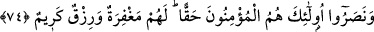

istediği) köye yaklaşmasını vahyetmiştir.”[80]
Eğer “Hadisten adamın tevbesinin kabul edildiği anlaşılıyor. Bu durum, kul hakkının
tevbe ile düşmeyeceği şeklinde sabit olan şer’î hükme muhaliftir.” dersen, buna cevap
olarak deriz ki: Başka birine zulmeden kimse bu halinden tevbe ederse ve Allah da
tevbesini kabul ederse, o kimsenin Allah’ın emrine muhalefet günahı bağışlanır.
Üzerinde kalan kul hakkına gelince bu Allah’ın meşîet ve irâdesine kalmıştır. Dilerse o
adamın hasmını razı eder, dilerse onun hakkını o kimseden alır. İşte hadiste anlatılan
şahsın durumu birinci kısımdandır. Hasmının Allah tarafından râzı edilmesi durumunda
da kul hakkı düşmektedir. Çünkü o hasmından alacağı hakkın karşılığını Allah’tan
almaktadır.
Hadiste tevbe edenin, günah işlediği ve günah işlemesine yardım eden kimselerin
bulunduğu mahalden ayrılması, onların yerine sâlih kimselerle berebar olması teşvik
edilmektedir.
Allah’ım, bizi de muhâcirlerden kıl ve sâlih kullarının arasına kat.
74. Îman edip hicret eden ve Allah yolunda cihad edenler, muhacirleri
barındıranlar, yardım edenler: İşte gerçek müminler onlardır. Mağfiret ve bol rızık
da onlarındır.
İcmâlî ve tafsîlî olarak îman edilmesi gereken esaslara “îman edip” Rasûlullah
(s.a.v.)’e uymak ve Allah’ın rızâsını taleb maksadıyla vatanlarını terk edip “hicret eden
ve” cennete ve derecelerine ulaştıracak olan İslâm dîni ve ihlâs demek olan “Allah
yolunda” kâfirlerle “cihad edenler,” -ki mücâhede ve cihâd, Allah yolunda bir kimse
ile savaşmak demektir.
“muhacirleri barındıranlar,” muhacir müminlere kucak açıp evlerini barklarını açan
ve her şeylerini onlarla eşit olarak paylaşanlar; düşmanlarına karşı onlara “yardım
edenler:” İlk olarak özellikleri sayılanlar, ilk muhâcirlerdir, ikinci olarak özellikleri
sayılanlar ise ensardır. “İşte gerçek” bir îmanla inanan “müminler onlardır.” Çünkü
onlar hicret, cihad, malı fedâ etmek ve hakka yardımcı olmakla îmanlarını
isbatlamışlar/tahkîkî îman hâline getirmişlerdir.
Önce geçen 72. âyet, mü’minlerin birbirlerine mîrasçı ve mîras konusunda
birbirlerinin velîsi oldukları ile ilgili hükümleri beyan etmek için zikredilmiştir. Bu 74.
âyet ise müminlerden kâmil îman sahiplerinin başkaları değil, ilk muhâcirler ve ensar
olduğunu beyan etmek için zikredilmiştir. Onun için bu âyet, önceki âyetin tekrarı
değildir.